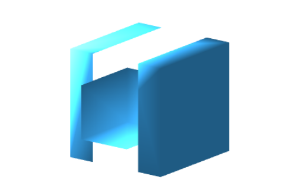
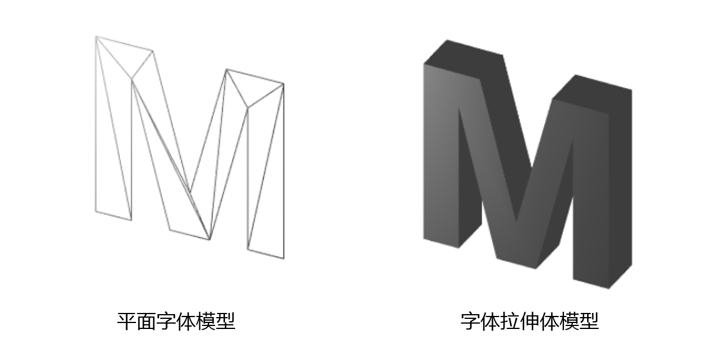
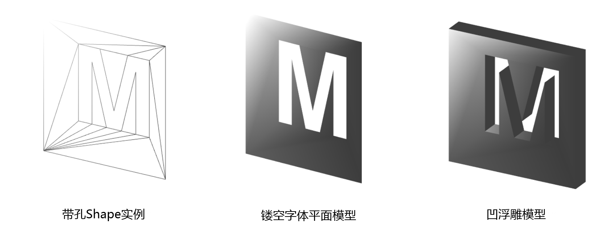
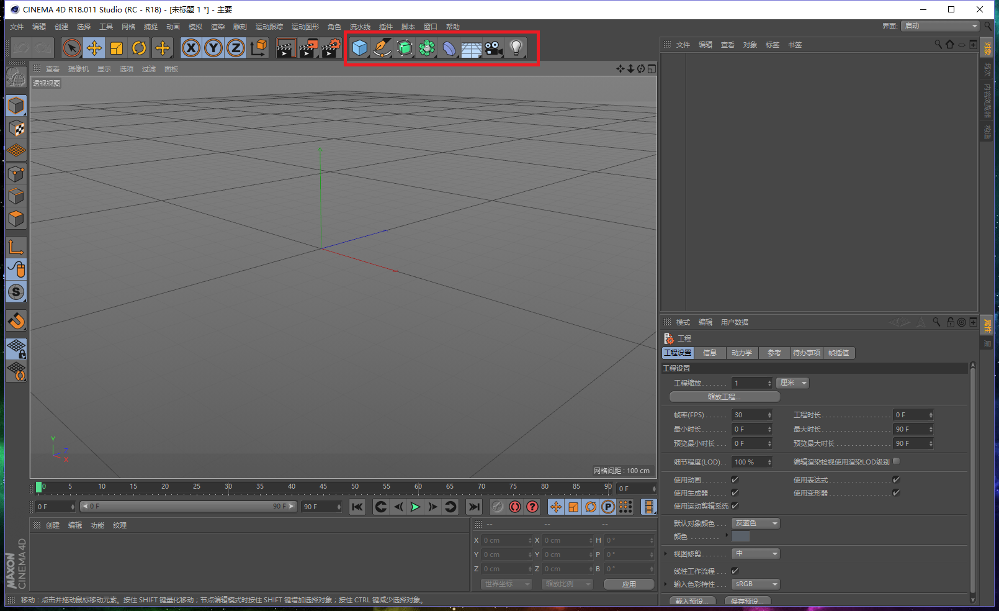
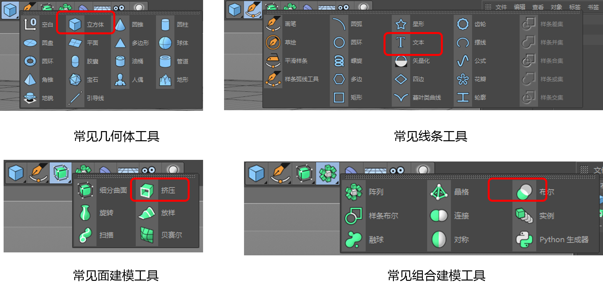
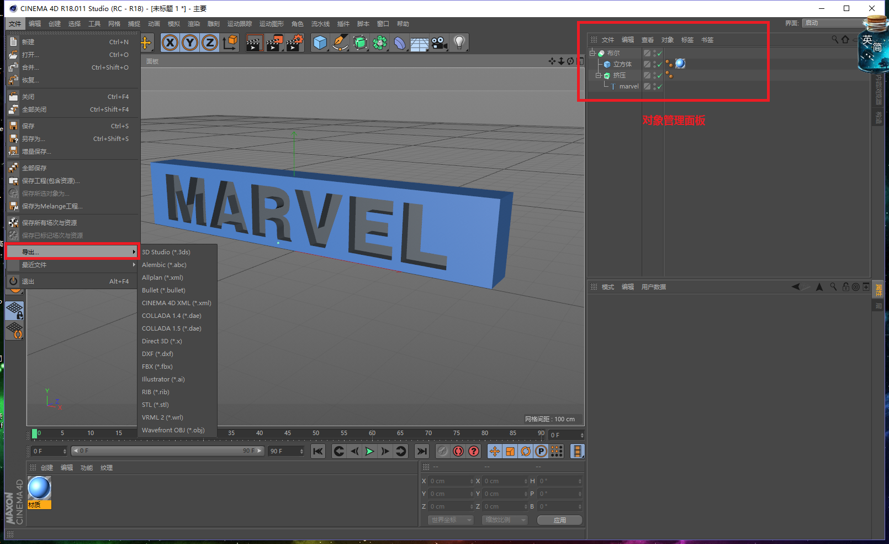
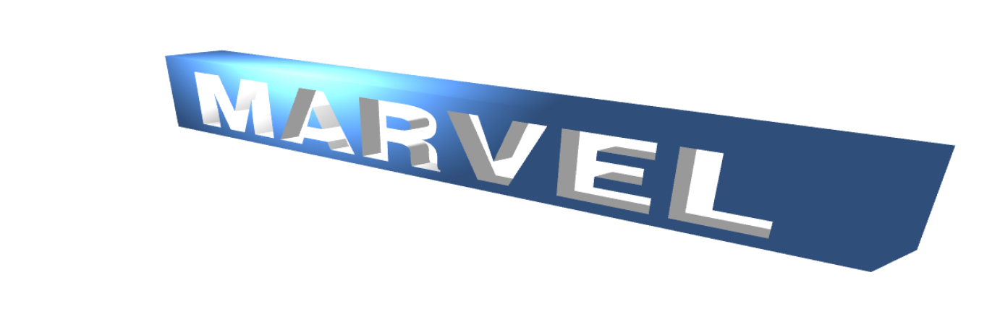

原文连接:https://www.cnblogs.com/dashnowords/p/11581812.html

示例代码托管在：http://www.github.com/dashnowords/blogs
博客园地址：《大史住在大前端》原创博文目录
华为云社区地址：【你要的前端打怪升级指南】
浮雕模型，简单地说就是在木板上刻字时所形成的效果，如果把字的部分都剔除掉，就得到一个凹浮雕模型，如果把字以外的部分都剔除掉，就得到一个凸浮雕模型。本文分别对利用Three.js在Web环境中生成凹浮雕模型时的几种策略进行讲解。
一. 方案1：ThreeBSP.js或ThreeCSG.js扩展库
在众多技术博客里，提及最多的就是上述两个库，它们声称是Three.js的扩展库，用来对模型进行实体布尔操作。
But！不要用！不要用！不要用！
查看github的仓库就可以发现，这两个库早在N年前已经停止维护，完全是没有保障的。而笔者亲测后发现除了官方提供的示例外，它们连最基本的立方体挖孔都无法做到，按照官方示例的写法最终只得到了下面的模型，而笔者原本的期望是在大立方体上挖出一个小立方体凹槽，字体模型就更不用提了。

二. 方案2：平面镂空模型拉伸
由于期望实现的凹浮雕模型并不算复杂，可以换一种实现思路，先在平面上生成一个矩形，然后从其中去掉字体的形状，最后再将剩余的部分拉伸成几何体，当然如果期望的浮雕模型并没有完全穿过毛坯模型时，还需要使用一个额外的立方体来补全剩余的部分。
字体文件的加载是异步的，当完成加载后，就可以获得字体对象，将它传入下面的函数来生成一个大小为40的M字符，它本质上是一个shape实例，将其作为参数就可以生成拉伸体模型：

所有的shape实例都有holes属性，顾名思义它就是用来在封闭的平面图形上进行挖孔操作的，正好符合凹浮雕模型的制作需求，我们只需要生成一个尺寸略大于字体模型包围盒的矩形，然后将字体模型的数据填入包围盒shape实例的holes数组中，Three.js就可以自动将其识别为孔：

关键代码如下所示（完整示例可在附件或文章开头的github仓库中获取）：
/*在平面上生成镂空字体*/
function calcShape(font) {
fontShape = font.generateShapes('M',40);
boxShape = new THREE.Shape();
boxShape.moveTo(-20,-20);
boxShape.lineTo(50,-20);
boxShape.lineTo(50,50);
boxShape.lineTo(-20,50);
boxShape.lineTo(-20,-20);
boxShape.holes.push(fontShape[0]);
return boxShape;
}
/*生成拉伸体*/
textGeometry = new THREE.ExtrudeGeometry(calcShape(font), {
depth:10,
bevelEnabled: false,
curveSegments: 4
});
对于更为复杂的模型，这种方式仍然显得不够直观。
三. 方案3：Cinema 4D建模后输出模型文件
Three.js这种基于编程的建模方式并不够直观，面对复杂模型时，通用的解决办法是使用三维建模软件进行模型构建，然后导出Three.js能够识别的模型文件，使用加载器载入后再对模型进行微调，Three.js为数十种通用的三维模型文件都提供了加载器，本节以C4D为例演示基本的实现过程，如果你它的基本使用方法还不清楚，可以在【慕课网】上找到免费的使用教程。
C4D的主界面如下所示，建模的主要工具主要在图中红框标记的部分：

在图标上长按左键就可以看到每个大类详细的功能：

本例中恰好每个大类均用到一个功能（上图中红框标记的功能），立方体功能生成立体包围盒毛坯模型，文本功能生成需要雕刻的文字，使用挤压功能生成一个拉伸体对象后，在界面右侧的对象管理面板中将“文本模型”拖放到挤压文字上，就可以得到一个基于文本形状的拉伸体，最后生成一个实体布尔模型，在对象管理面板中将立方体和挤压体依次拖放到对象名布尔这两个字上，它们就会成为布尔运算的成员，在布尔模型的配置中将操作类型选择为A减B，就可以得到凹浮雕模型了。建模的通用思路就像是函数式编程，先指定操作，再传入数据。

Three.js官方建议的模型格式为*.gltf格式，想要在C4D中直接导出这种格式需要安装相应的插件（GLTF格式工具仓库）。本例中我们采用另一种方式来实现，先在“文件”菜单中选择“导出”得到模型文件，本例中以*.obj扩展名为例。如果添加了表面材质，生成obj数据的同时还会带有一个同名的mtl文件（Material Template Library），它携带着obj几何体表面的材质信息，接下来使用命令行工具obj2gltf（npm上可以直接搜出来）对导出的文件进行格式转换，最后只需要将生成的marvel.gltf文件利用Three.js提供的GLTFLoader加载器导入到网页中即可，相关代码如下：
// instantiate a loader
var loader = new THREE.GLTFLoader();
// load a resource
loader.load(
// resource URL
'assets/marvel.gltf',
// called when resource is loaded
function (event) {
console.log(event);
event.scene.scale.set(0.2,0.2,0.2);
scene.add(event.scene);
render();
},
// called when loading is in progresses
function (xhr) {
console.log((xhr.loaded / xhr.total * 100) + '% loaded');
},
// called when loading has errors
function (error) {
console.log('An error happened');
}
);可以看到网页中加载的模型既包含了凹浮雕模型，也包含了我们在建模软件中添加的蓝色材质（途中的亮蓝色区域是点光源照射的效果）。

本节的示例Demo可在文章开头的github仓库中获取到，如果觉得对你有用，可以在仓库帮我点个星星~